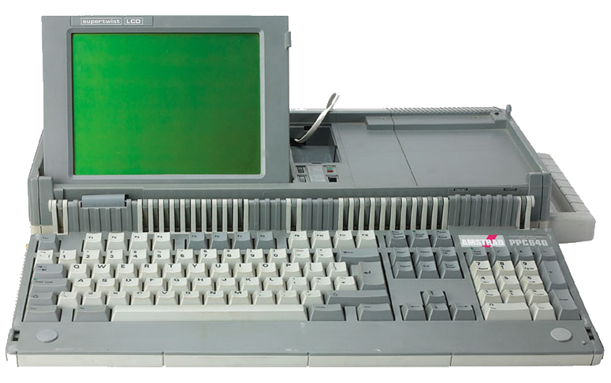
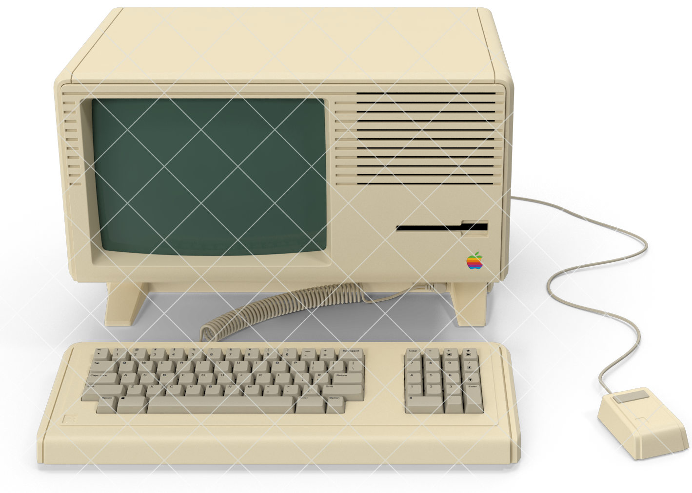

Pc Retro
El PowerBook 180 (llamado Converse durante su desarrollo) fue un ordenador portátil que Apple lanzó el 19 de octubre de 1992 con el PowerBook 145 y el PowerBook 160, con un coste inicial de 3.870 dólares, sustituyendo al PowerBook 170 como modelo de gama alta. Utilizaba la misma carcasa que el PowerBook 160, pero con una CPU a 33 MHz y una FPU Motorola 68882. Fue descatalogado el 16 de mayo de 1994. En junio de 1993, Apple lanza una versión en color, el PowerBook 180c, con pantalla de matriz activa LCD y soporte de 256 colores. El resto es igual en ambos modelos. CPU: Motorola 68030 a 33 MHz, con MMU integrado, sin FPU FPU: Motorola 68882 ROM: 1 MB (ROM ID : $067C) RAM : 4 Megabytes ampliables a 14 MB Pantalla: de 9,8 pulgadas, matriz pasiva LCD integrada, soporta una resolución interna de 640 × 400 en 4 bits (niveles de gris). La GPU de Apple viene equipada con 512 KB de VRAM. Mediante un monitor externo soporta las siguientes resoluciones: 512 × 384 en 8 bits (256 colores) 640 × 400 en 8 bits 640 × 480 en 8 bits 800 × 600 en 8 bits 832 × 624 en 8 bits Almacenamiento Una unidad de disquete SuperDrive de 3,5 y 1,44 MB Un disco duro SCSI de 80 a 120 MB Cualquier dispositivo SCSI externo, como: Unidades Iomega Bernoulli Box Unidades de Disco magneto-óptico Unidades Iomega Zip Unidad SuperDisk (LS-120) Unidad Iomega Jaz Unidad Castlewood Orb Unidad CD-ROM y grabadoras
ThinkPad es una marca de ordenadores portátiles o Laptops originalmente diseñada por Richard Sapper, y producida y vendida por IBM. Desde el año 2005 ThinkPad es producido y promocionado por Lenovo, que compró la división de ordenadores personales de IBM. IBM introdujo la línea ThinkPad en 1992. El nombre "ThinkPad" tiene sus orígenes en la historia y cultura corporativa de IBM. Thomas J. Watson primero introdujo la palabra "THINK!" ("¡REFLEXIONE!") como un eslogan de IBM en el año 1920. Durante décadas, IBM distribuyó pequeños blocs de notas con la palabra "THINK" estampada en una tapa color café de piel entre los empleados y clientes.1 La leyenda dice que el nombre ThinkPad fue sugerido para computadoras móviles por un investigador que tenía un bloc de notas "THINK" en su bolsillo.
 Las Amstrad PPC512 y Amstrad PPC640 fueron las primeras computadoras portátiles compatibles con PC de IBM fabricadas por Amstrad. Lanzados en 1988, fueron un desarrollo de los modelos PC-1512 y PC-1640 de escritorio. Como computadoras portátiles, contenían todos los elementos necesarios para realizar la computación en movimiento. Tenían un teclado y una pantalla LCD monocromática incorporados y también tenían espacio para baterías desechables para alimentar la PC donde no estaba disponible una fuente de alimentación alternativa adecuada (es decir, la red eléctrica o la alimentación del vehículo de 12 voltios). Las PC venían con una o dos unidades de disquete de doble densidad y doble cara y el modelo PPC640 también presentaba un módem. Ambos modelos se suministraron con el software 'PPC Organizer' y el PPC640 se suministró adicionalmente con el software de comunicaciones 'Mirror II'. Las dos computadoras tenían especificaciones muy similares. El PPC512 tenía un procesador NEC V30 funcionando a 8 MHz, 512 KiB de memoria, un teclado de 102 teclas de tamaño completo con un teclado numérico, una pantalla de cristal líquido incorporada (no retroiluminada) [1] que podía emular el CGA o MDA y una o dos unidades de disquete de 720k 3.5 "(el modelo era PPC512S o PPC512D dependiendo de la cantidad de unidades que tuviera). El PPC640 era idéntico, excepto que tenía 640 KiB de memoria, 2400 baudios incorporados módem (inusualmente rápido para su día), y su caja era de un tono gris más oscuro. Ambas versiones de la máquina tenían un zócalo vacío en la placa de circuito principal para que se pudiera instalar un coprocesador Intel 8087 para permitir el procesamiento de hardware de aritmética de punto flotante . El PPC incluía conectores estándar para video RS-232, Centronics y CGA / MDA, permitiendo el uso de periféricos existentes. Todas las señales utilizadas por el bus ISA de 8 bits también estaban disponibles a través de un par de conectores de expansión. Había disponible un compartimento externo para tarjetas de expansión
 El Apple Lisa fue un ordenador diseñado y fabricado por Apple Computer a principios de la década de 1980 y el segundo en tener una interfaz gráfica de usuario. A pesar de no tener éxito comercial en su momento y desaparecer del mercado a los pocos años de su lanzamiento, fue un microcomputador muy avanzado para su época y pionero en integrar un conjunto de avances tecnológicos a nivel de hardware y software que terminaron convirtiéndose en estándares de la industria de la computación, como el ratón, la GUI (interfaz gráfica de usuario), el sistema de mapa de bits, pantalla de fondo blanco con visualización WYSIWYG antes de impresión, el disco duro, el microfloppy, la memoria virtual, capacidad multitarea, ventanas de tareas traslapables y un software de suite ofimática como paquete incorporado, basado en siete programas utilitarios compatibles y auto-integrables con capacidades de generación de gráficas matemáticas y financieras. El Proyecto Lisa fue iniciado por Apple en 19781 con el fin de diseñar un computador personal accesible a múltiples usuarios como producto masivo de uso simplificado. El computador Lisa finalmente se orientó al mercado empresarial corporativo. En diciembre de 1979, una delegación de Apple liderada por Steve Jobs visitó las oficinas de Xerox PARC en Palo Alto, California. Xerox en aquel momento buscaba ser inversor de Apple y sus acciones experimentaron un aumento exponencial de su valor. Jobs ya había negociado con ellos para intentar acceder a su tecnología. En aquellas visitas, Jobs, junto a los ingenieros John Couch, jefe del proyecto, Bill Atkinson, Bruce Horn y el resto de su equipo pudieron observar los avances realizados en este centro de investigación e innovación digital, entre ellos la GUI (Graphic User Interface, en español interfaz gráfica de usuario) mediante el uso de mapas de bits, el lenguaje de programación orientado a objetos y la interconexión en red de computadores aplicada al entorno Smalltalk. Quedaron profundamente impresionados, llevando a redefinir el objetivo inicial del proyecto. Apple tomó del Xerox PARC el concepto del ratón. Era un innovador dispositivo que mediante la rodadura de una bola de goma dura permitía desplazar el cursor por toda la pantalla activando los iconos generados a través del sistema de mapa de bits. Todas estas innovaciones y conceptos fueron mejorados y desarrollados por Apple de una forma que Xerox no logró en sus productos Xerox Alto y Xerox Star. Por ejemplo, el sistema operativo de Lisa permitía arrastrar carpetas y archivos a través de la pantalla y mediante pequeños clics en el botón del ratón abrir carpetas e introducir información. Asimismo Bill Atkinson desarrolló el sistema de ventanas traslapadas a través del concepto de las regiones, lo cual permitió introducir la ilusión de marcos de trabajo traslapados que hoy en día es el estándar usual en cualquier computadora de escritorio. Los ingenieros de Xerox PARC, al ver lo que Atkinson había logrado a partir de su visita a los laboratorios quedaron impresionados. Otra innovación sugerida por Atkinson que finalmente se introdujo en esta computadora fue el de la pantalla de fondo blanco, lo cual permite al usuario ver en pantalla lo que finalmente se iba a imprimir (WYSIWYG, por su acrónimo en inglés). Algunos de los ingenieros que formaron parte del proyecto Smalltalk finalmente participaron también en este.
 El PowerBook G3 es una serie de computadoras personales Macintosh diseñadas, fabricadas y vendidas por Apple Computer, Inc. de 1997 a 2001. Fue la primera computadora portátil en utilizar la serie de microprocesadores PowerPC G3 (PPC740 / 750), y se comercializó como la computadora portátil más rápida del mundo para toda su producción. El PowerBook G3 fue sucedido por el PowerBook G4
El primer Macintosh PowerBook G3, con el nombre en código "Kanga", se presentó en noviembre de 1997. En el momento de su presentación, el PowerBook G3 se anunciaba como la computadora portátil más rápida disponible (un título que anteriormente tenía su predecesor, el 240 MHz PPC PowerBook 3400c basado en 603ev). Este modelo se basó en el PowerBook 3400c, y no se conocía oficialmente como el PowerBook 3500. Usó el mismo estuche que el 3400c y una placa base muy similar. La placa base se aumentó de 40 MHz a 50 MHz, lo que resultó en cierta incompatibilidad con los módulos 3400 RAM más antiguos. Otros cambios en la placa base incluyeron duplicar la RAM incorporada de 16 MB a 32 MB, y una versión más rápida del controlador gráfico integrado Chips and Technologies. El G3 hizo que el Kanga fuera más del doble de rápido que un 3400c, [1] y el controlador de gráficos mejorado le permitió actualizar la pantalla un 74 por ciento más rápido. [2]
Este primer PowerBook G3 se envió con un procesador G3 de 250 MHz y una pantalla LCD TFT SVGA de 12.1 ". Es el único sistema G3 que no es oficialmente compatible con Mac OS X (aunque se pueden usar varios métodos no autorizados por Apple para instalar OS X) El Kanga estuvo en el mercado por menos de 5 meses, y es considerado en gran medida como un sistema provisional que le permitió a Apple enviar G3 PowerBooks antes, mientras que Apple preparó su más revolucionaria serie PowerBook G3. Como resultado, el Kanga tiene la dudosa distinción de ser el PowerBook que se deprecia más rápido de Apple. Sin embargo, muchas personas optaron por comprar un Kanga para continuar usando sus módulos intercambiables de expansión, baterías y otros periféricos de los modelos Powerbook 190, 5300 y 3400. El Kanga también era notablemente más pequeño en profundidad y ancho que los posteriores Powerbooks de Wallstreet, y el Kanga siguió siendo el portátil G3 más pequeño cuando se abrió hasta el debut del Apple iBook algunos años después.
El PowerBook G3 es una serie de computadoras personales Macintosh diseñadas, fabricadas y vendidas por Apple Computer, Inc. de 1997 a 2001. Fue la primera computadora portátil en utilizar la serie de microprocesadores PowerPC G3 (PPC740 / 750), y se comercializó como la computadora portátil más rápida del mundo para toda su producción. El PowerBook G3 fue sucedido por el PowerBook G4
El primer Macintosh PowerBook G3, con el nombre en código "Kanga", se presentó en noviembre de 1997. En el momento de su presentación, el PowerBook G3 se anunciaba como la computadora portátil más rápida disponible (un título que anteriormente tenía su predecesor, el 240 MHz PPC PowerBook 3400c basado en 603ev). Este modelo se basó en el PowerBook 3400c, y no se conocía oficialmente como el PowerBook 3500. Usó el mismo estuche que el 3400c y una placa base muy similar. La placa base se aumentó de 40 MHz a 50 MHz, lo que resultó en cierta incompatibilidad con los módulos 3400 RAM más antiguos. Otros cambios en la placa base incluyeron duplicar la RAM incorporada de 16 MB a 32 MB, y una versión más rápida del controlador gráfico integrado Chips and Technologies. El G3 hizo que el Kanga fuera más del doble de rápido que un 3400c, [1] y el controlador de gráficos mejorado le permitió actualizar la pantalla un 74 por ciento más rápido. [2]
Este primer PowerBook G3 se envió con un procesador G3 de 250 MHz y una pantalla LCD TFT SVGA de 12.1 ". Es el único sistema G3 que no es oficialmente compatible con Mac OS X (aunque se pueden usar varios métodos no autorizados por Apple para instalar OS X) El Kanga estuvo en el mercado por menos de 5 meses, y es considerado en gran medida como un sistema provisional que le permitió a Apple enviar G3 PowerBooks antes, mientras que Apple preparó su más revolucionaria serie PowerBook G3. Como resultado, el Kanga tiene la dudosa distinción de ser el PowerBook que se deprecia más rápido de Apple. Sin embargo, muchas personas optaron por comprar un Kanga para continuar usando sus módulos intercambiables de expansión, baterías y otros periféricos de los modelos Powerbook 190, 5300 y 3400. El Kanga también era notablemente más pequeño en profundidad y ancho que los posteriores Powerbooks de Wallstreet, y el Kanga siguió siendo el portátil G3 más pequeño cuando se abrió hasta el debut del Apple iBook algunos años después.
Desarrollador= Santiago Herbes